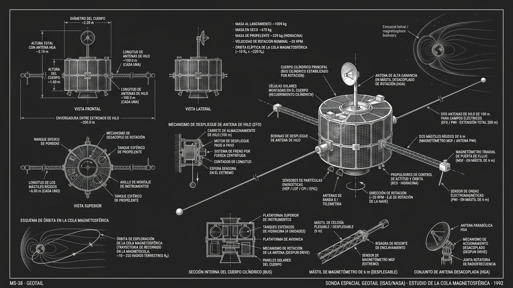

Geotail

Fue la primera misión conjunta de Japón y la NASA y estaba pensada para cuatro años: duró más de treinta. Localizó el punto donde el campo magnético terrestre se rompe y se vuelve a unir, a 80.000-120.000 millas.
Fin de operaciones el 28 de noviembre de 2022, después de fallar su segundo grabador de datos el 28 de junio de 2022; operó más de 30 años frente a los 4 previstos y continúa en una órbita elíptica de 9 x 30 radios terrestres. Personas: Guan Le, Iku Shinohara, Masaki Fujimoto, Donald H. Fairfield
Lo que hizo
- Dos banderas — Fui el primer proyecto conjunto del ISAS japonés y la NASA, dentro del programa ISTP: Japón construyó y controló la nave y Estados Unidos aportó instrumentos y seguimiento.
- El lugar de la reconexión — Localicé la reconexión magnética entre 80.000 y 120.000 millas, en el lado nocturno, y la vi coincidir con auroras sobre los polos. Ese hallazgo guió la órbita de MMS.
- Treinta años, no cuatro — Estaba diseñado para cuatro años y funcionó más de treinta. Falló un grabador en 2012 y el segundo en junio de 2022; el ISAS/JAXA cerró las operaciones el 28 de noviembre de 2022.
Modelo 3D, chat y cómic, en tres idiomas
Fuentes
- science.nasa.gov/mission/geotail/
- www.nasa.gov/science-research/heliophysics/nasas-geotail-mission-operations-come-to-an-end-after-30-years/
- www.isas.jaxa.jp/en/topics/003261.html
Ver el índice completo · Proyecto del NASA Space Apps Challenge 2026. Contenido con fuentes citadas.